Walkthrough: CI/CD With Jenkins
Follow along with the instructor as we configure Jenkins.
Setup
For this example we will be using the same project. Fork and Clone this repository.
For this to work your Airwaze tests need to pass.
- Open your Airwaze project and run the tests
- If they don’t pass, then fix them ;)
Our Continous Integration & Delivery Goals
After a branch/story is merged into our master branch. We want…
- Make sure the master branch still compiles after the merge
- Make sure the tests still pass
- Create a
.jar file
- Deliver the
.jar file to expedite deployment
To accomplish these goals we will need to…
- Install & Configure Jenkins
- Create a Jenkins user
- Install Plugin
- Create Empty Projects
- Build Airwaze Compile
- Link Projects Together
- Configure Airwaze Compile
- Configure Airwaze Test
- Configure Airwaze CreateJar
- Configure Airwaze Deliver
Install Plugin - Parameterized Trigger
Before we get started in creating our Jenkins Projects we are going to install the Parameterized Trigger plugin. This plugin will allow us to link Jenkins Projects together (trigger), and have all the projects share the same workspace (parameters).
On the left hand side of the Jenkins Home page you should see a button labeled Manage Jenkins click it now. You should see the Manage Jenkins page that looks something like this:
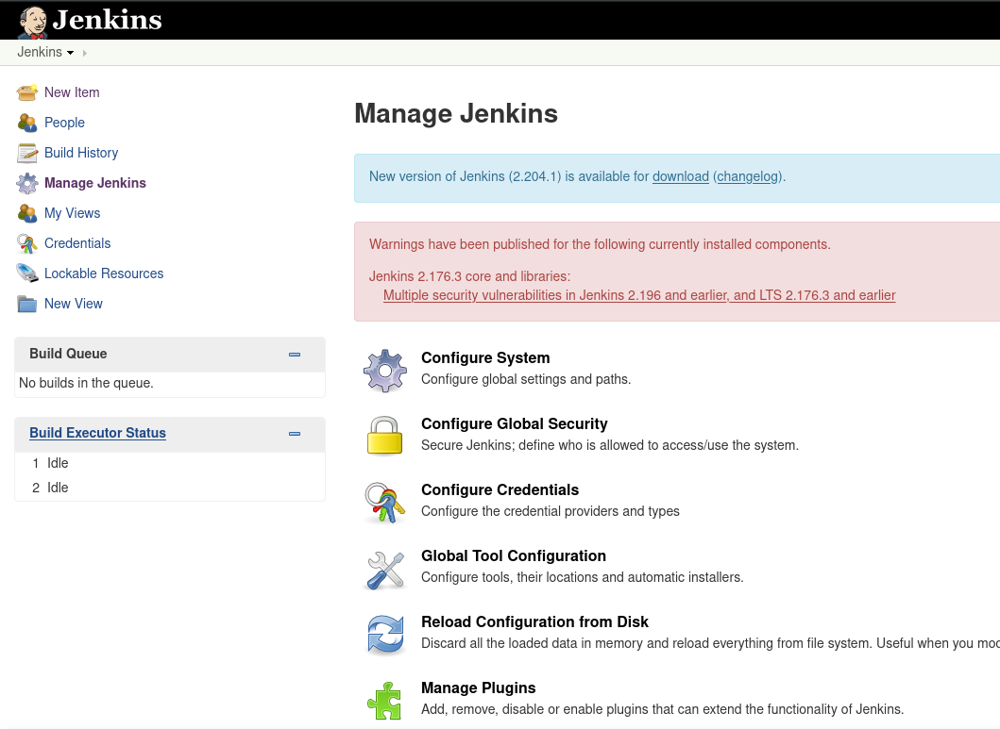
Click the Manage Plugins button (it looks like a loose puzzle piece).
That should take you to this page:
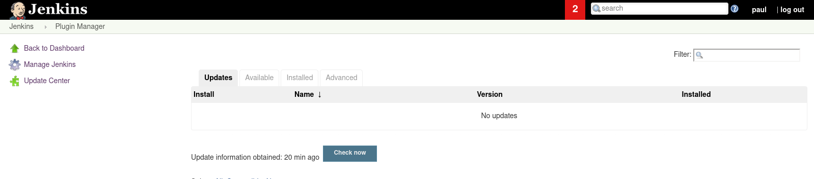
Select the Available tab and then use the Filter box to search for Parameterized Trigger which should look like this:
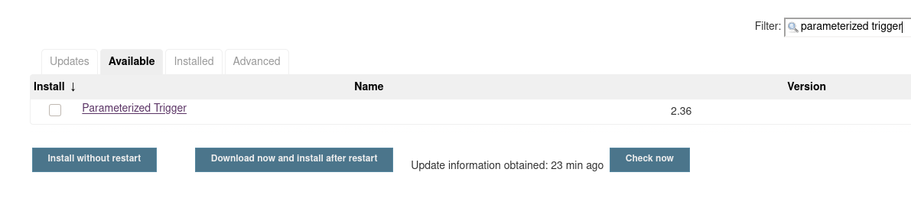
Select the checkbox for this plugin and click the Install without restart button. This will take you to a new page and may take a couple of minutes to completely install.
After the plugin is installed completely return to the Jenkins Home Page, by clicking the Jenkins Icon in the top left of your browser.
Create Empty Projects
We need to create 4 projects in Jenkins, for now we just want to name them and save them.
The projects we want to create are:
- Airwaze Compile
- Airwaze Test
- Airwaze CreateJar
- Airwaze Deliver
For each project:
- Click New Item
- Enter in the Project Name
- Click Freestyle Project
- Click OK
- On the configure project screen click Save
Following is a walkthrough for the first project Airwaze Compile. You will need to do this four times for all of the projects we need for this pipeline.
From the Jenkins Homepage click New Item on the menu on the left side of your screen. This will take you to a page like this:
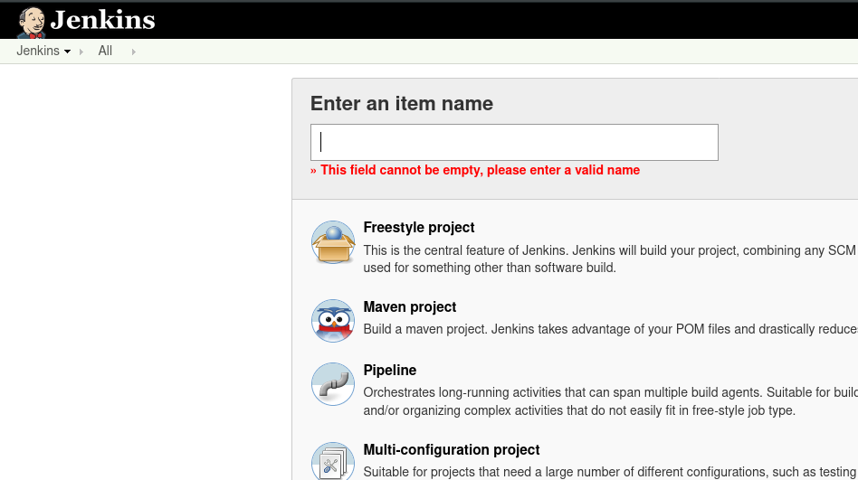
Put in the Item name: Airwaze Compile, click Freestyle project, and then click the OK button. This should take you to the Configure Project screen:
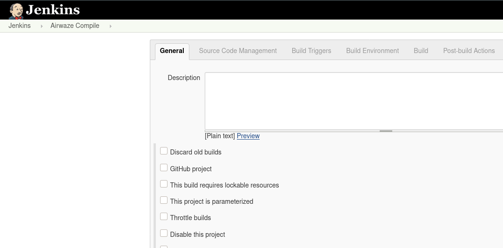
For now we aren’t going to configure anything, so just click the Save button.
Repeat the Create new Item steps for all four of our projects: Airwaze Compile, Airwaze Test, Airwaze CreateJar, and Airwaze Deliver and then return to the Jenkins Homepage which should look like this:
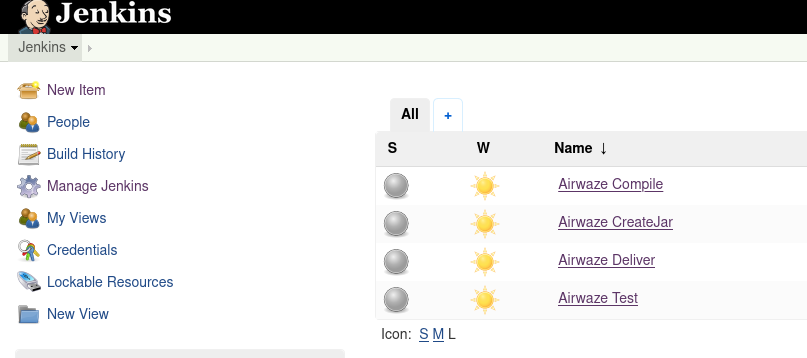
Build Airwaze Compile
To familiarize ourselves with how Jenkins works let’s try building one of our projects. We haven’t added any actions to our project yet, but Jenkins will still run it for us. From your Jenkins dashboard click on your Airwaze Compile project. This takes you to the homepage for this specific project and looks like:
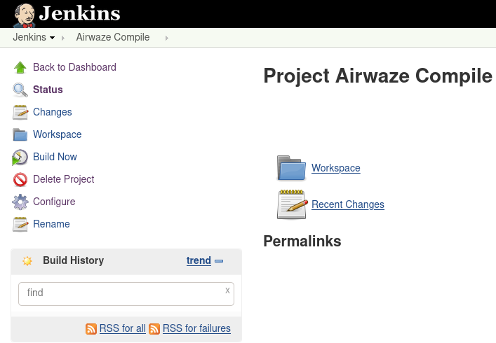
From here click on the Build Now button on the left-hand menu. This will schedule a build that should start immediately. You should see that your build history has changed and now has one build in it like the following image:
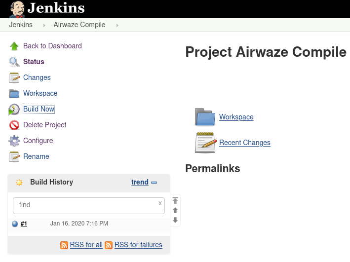
Let’s click on that build (it should be a link) and look at the page for this specific build:
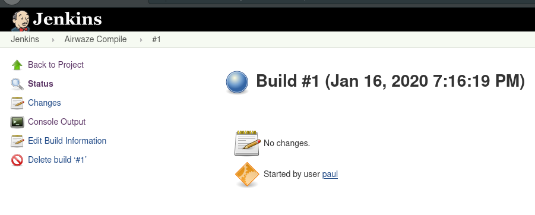
From here click on Console Output so we can see what came out of the terminal when this build was run in our Jenkins Container:
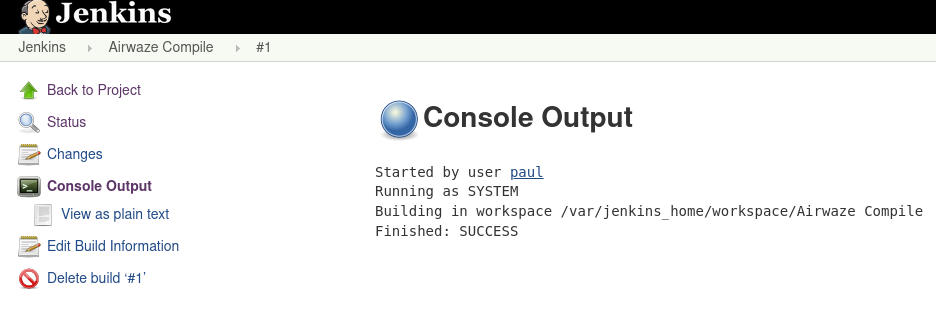
The Console Output is pretty sparse, which makes sense we haven’t told Jenkins to do anything for us in this build yet! The output is just letting us know where this project’s workspace is, and that this build was successful. The workspace is where all of the files for this project would live. Any built artifacts, or .jar files, test results, etc.
However, we don’t want to manually trigger all of these individual projects manually. In the next section we will add some configurations to our existing projects so they will automatically build when a previous project was successful.
Link Projects Together
- We know the order of our projects:
- Airwaze Compile
- Airwaze Test
- Airwaze CreateJar
- Airwaze Deliver
So let’s use the parameterized trigger plugin we installed earlier to run our projects in this order. Navigate to the Airwaze Compile homepage and click Configure which should take you back to the project configuration screen:
From here we want to add a Post build Action so click the tab or scroll towards the bottom of this page until you see:
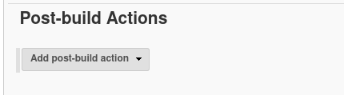
Click the drop-down menu and select Trigger parameterized build on other projects:
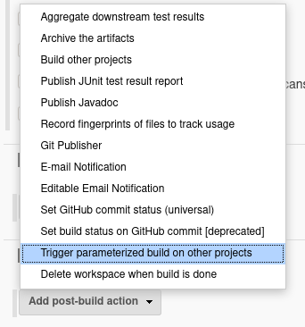
This will create a new section in which you will need to enter the next project to build Airwaze Test, and then you will have to add two parameters using the Add Parameters drop-down box: build on the same node and Predefined parameters. In the Predefined parameters section add: AIRWAZE_WORKSPACE=${WORKSPACE} and click the Save button.
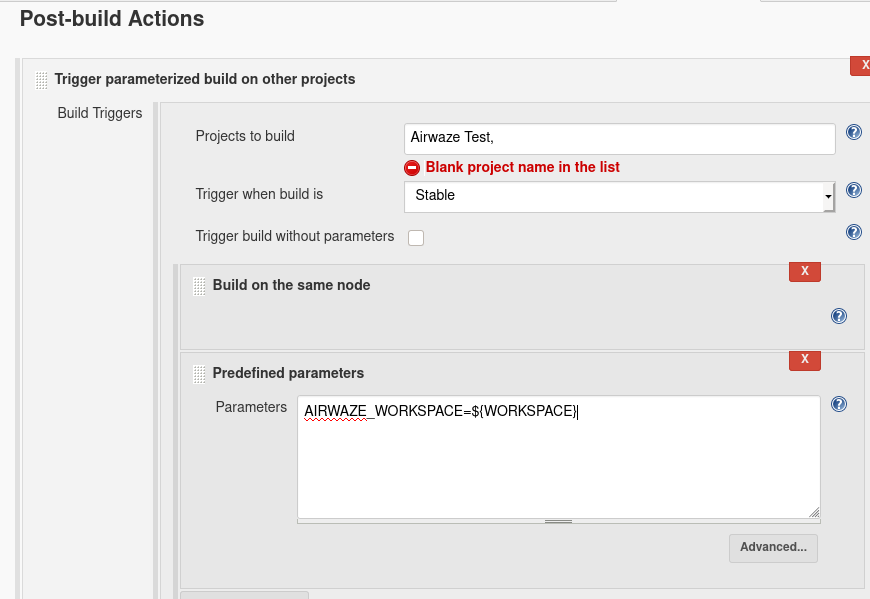
We have told Jenkins that when the Airwaze Compile project is successful that it should automatically schedule and run Airwaze Test. We have instructed Jenkins to run the next project on the same node, and that we will be passing it one parameter. The parameter key is AIRWAZE_WORKSPACE and the value is ${WORKSPACE}. This is how we share the same workspace between the two projects.
Our workspace is what contains our built artifacts, and all of the files of our project. We want this to be used by all projects so that we don’t have to keep pulling these files into each individual project.
Now we will need to configure our Airwaze Test project to receive this parameter, and to use the workspace that is being passed in. Open the Airwaze Test project, and click configure:
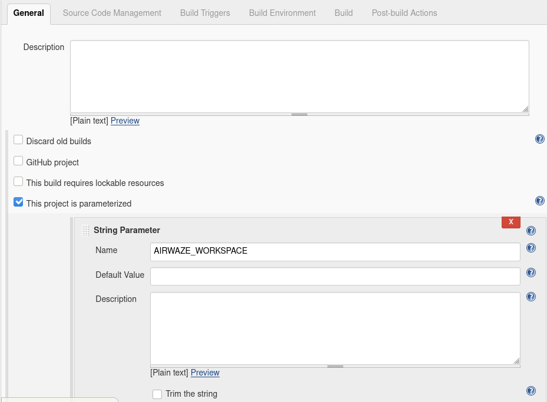
In the General section we need to select the This project is parameterized checkbox and we need to add a new String Parameter from the Add Parameter drop-down menu. In the String Parameter section add AIRWAZE_WORKSPACE to the Name field. This is our way of letting this project know the previous project will be passing in one parameter, and we should name it AIRWAZE_WORKSPACE.
We now need to configure a custom workspace for this project. At the bottom of the General section you should see a button labeled Advanced click that button to see more options including Use custom workspace. Check the Use custom workspace checkbox and enter ${AIRWAZE_WORKSPACE} we are using the parameter passed in from the previous section here:
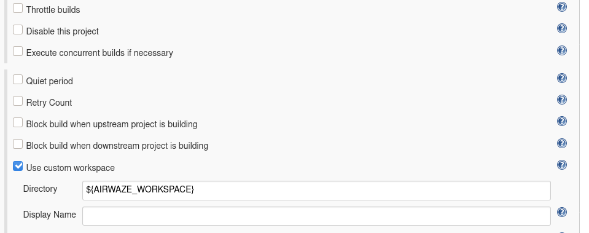
Double check that you have selected This project is parameterized, you added the new String Parameter that represents our workspace, and added the Use custom workspace and set it’s directory to the parameter that was passed in and click Save.
Let’s try it out to make sure it worked. Navigate to your Airwaze Compile project, and click Build now. When it’s completed it should automatically fire your next project Airwaze Test.
- Now we will need to add the conditions to continue passing the workspace and triggering the next builds. Using the steps we followed above you will need to:
- Add a post build action to
Airwaze Test
- Add parameters, and custom workspace to
Airwaze CreateJar
- Add a post build action to
Airwaze CreateJar
- Add parameters, and custom workspace to
Airwaze Deliver
After making the additional amendments to Airwaze Test, Airwaze CreateJar, and Airwaze Deliver build Airwaze Compile and watch Jenkins run through all four of our projects. Your dashboard should look like this:
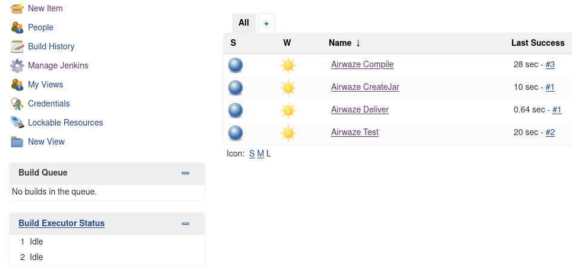
Now that all of our projects are in an automated pipeline let’s start adding some actual build actions to our projects!
Configure Airwaze Compile
Our first project is to compile our code. In order to do this we will first need to get our code into the hands of Jenkins. We will do this within our first project Airwaze Compile. Go to the Configure project screen for Airwaze Compile and select the Source Code Management header, or scroll to that section:
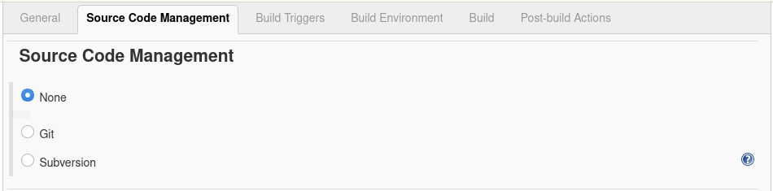
Select Git. From here you will need to provide the URL to your git repository, and which branch for it to pull from. It should looks something like this:
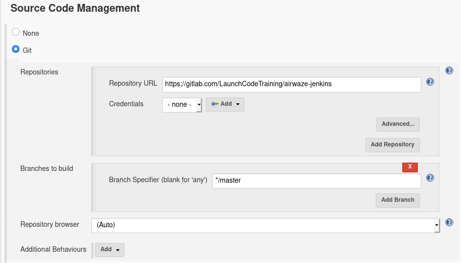
Note
If you are attempting to pull from a private git repository you will have to give Jenkins the proper credentials. In GitLab the easiest way is to create a Deploy Token and paste the token information into the credentials section of the repository. You can find Deploy Tokens under Settings->Repository from the GitLab web interface.
This will give this Jenkins project the ability to pull from your Git repository and to store the files it pulls into it’s workspace. Let’s try it out!
Click Save, and then build now.
After the build finishes click on Workspace. You should notice now that it pulled all your files from Git:
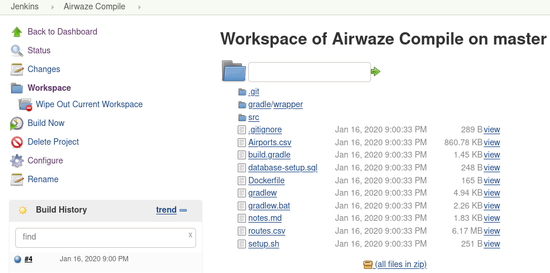
Tip
You may also want to checkout the Console Output for this specific build, it is showing us the output from the actual commands run by Jenkins. You will probably see some information about Git connecting to and pulling down files from the referenced Git URL.
Now that we have the files from GitLab we can compile them! We will do that with a Gradle Task. Configure Airwaze Compile one last time. This time navigate to the Build section and Add a build step which Invoke Gradle script:
We want to select Use Gradle Wrapper, and then we need to include the gradle tasks we want to run. Let’s run clean and compileJava.
Now the Jenkins project Airwaze Compile will pull down our code from GitLab, run the Gradle tasks clean and compileJava and if all three of those things are successful it will trigger the next Jenkins project Airwaze Test.
Run this project again and make sure it is still successful letting us know the code that was pulled from GitLab was compiled successfully.
Tip
After running Build Now again checkout the Console Output of this Jenkins project Build. We now see some familiar Gradle messages about running tasks and if they were successful or not. The Console Output is a very beneficial tool for troubleshooting your Jenkins projects.
Configure Airwaze Test
In our pipe we have pulled down our code from GitLab, and we have successfully compiled it. Since we are sharing one workspace between all of our Jenkins Projects we simply need to run a Gradle test script to verify all of our tests pass.
Before we re-configure Airwaze Test by invoking a test gradle script, let’s make sure we understand the dependencies of our tests. Looking at airwaze-jenkins/src/test/resources/application-test.properties:
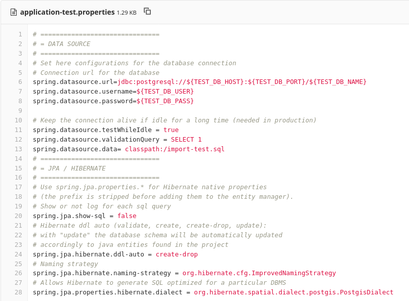
We can see that we are connecting to a Test DB using some environment variables. We will need to make sure we provide Jenkins the proper environment variables. We will also have to make sure our Gradle test task has access to the environment variables.
Let’s also take a look at airwaze-jenkins/build.gradle:
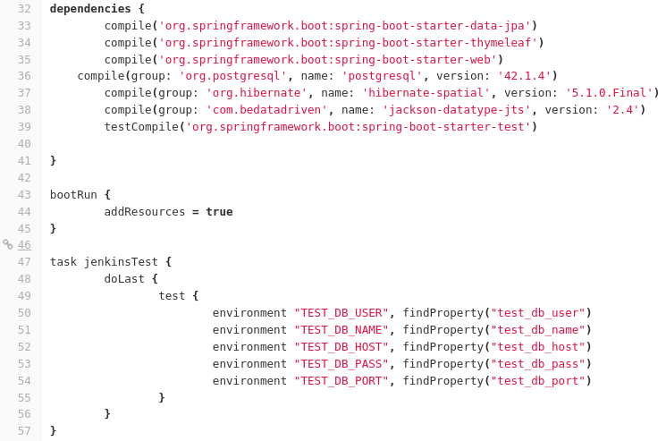
Whoever wrote this file provided us with a new Gradle task named jenkinsTest. This task simply loads in some environment variables in a new way and then calls the Gradle test task. Now when jenkinsTest is run it will first set the environment variables from the server via the listed properties. This is how we will pass environment variables inside of our Jenkins Project to our Gradle test task.
Let’s create that task now. Configure your Airwaze Test project. Go to the Build section and click Add build step and click Invoke Gradle script.
From here we want to select the Gradle Wrapper, and run the Gradle Task available to us in the build.gradle file named jenkinsTest:
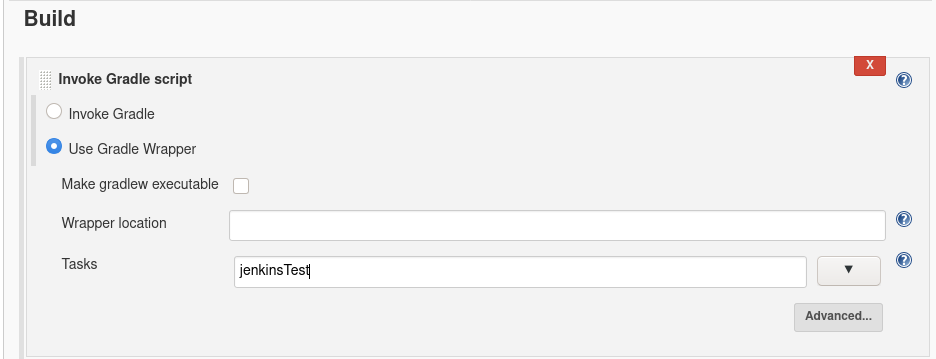
We need to add the environment variables to this Jenkins build step so that it can pass them to Gradle. Click Advanced scroll down to Project Properties and add:
test_db_user=airwaze_test_user
test_db_pass=airwazepass
test_db_name=airwaze_test
test_db_port=5432
test_db_host=172.17.0.2
Hold up! Why are we not using 127.0.0.1 as the address of our database? Because Jenkins lives in it’s own Docker Container. To our Jenkins container 127.0.0.1 refers to the Jenkins container. We need to provide the internal IP address of our airwaze database. You can find this by running docker inspect [name_of_airwaze_database_container]:
Note the output when I run docker inspect postgis-airwaze:
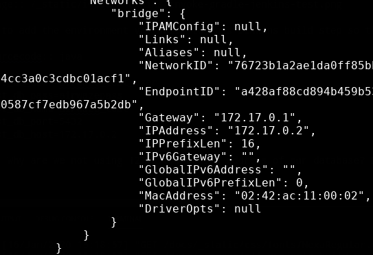
So in my case I need to use 172.17.0.2 as the address of my test database.
In the end my Jenkins Build Action looks like this:
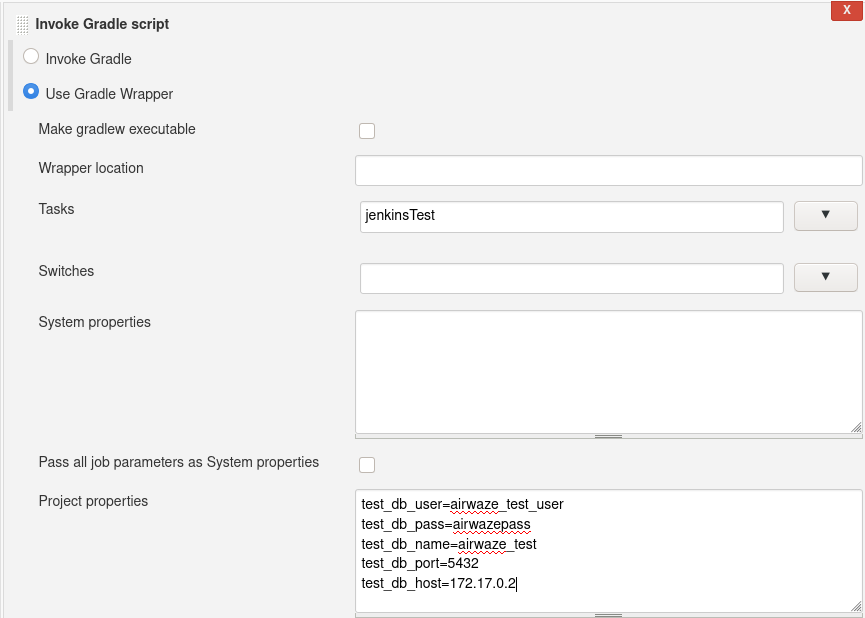
Note
Note the difference between what we gave Jenkins (test_db_user) and what is an environment variable in Gradle (TEST_DB_USER). You could use the same case however we chose to write one in upper case, and one in lower case to help illustrate where they are being used.
Finally Let’s save this Jenkins project, and run Build Now on our Airwaze Compile project to see if Airwaze Test passes.
Tip
If your tests fail look at the Console Output to figure out what is going on. Double check this section to ensure you’ve set the fields properly, and compare what you have with fellow students, and the instructor.
Next Steps
Our Jenkins pipeline only takes us through Delivery, but doesn’t automatically Deploy our jar file. Looking into AWS Code PipeLine could help us take this pipe all the way to deployment…
- Other ideas to implement:
- Trigger
Airwaze Compile on GitLab merge to your forked repo
- CI/CD for your Zika Client
- Try setting up a pipeline with the same stages using a different tool (GitLabCI, Travis, etc)